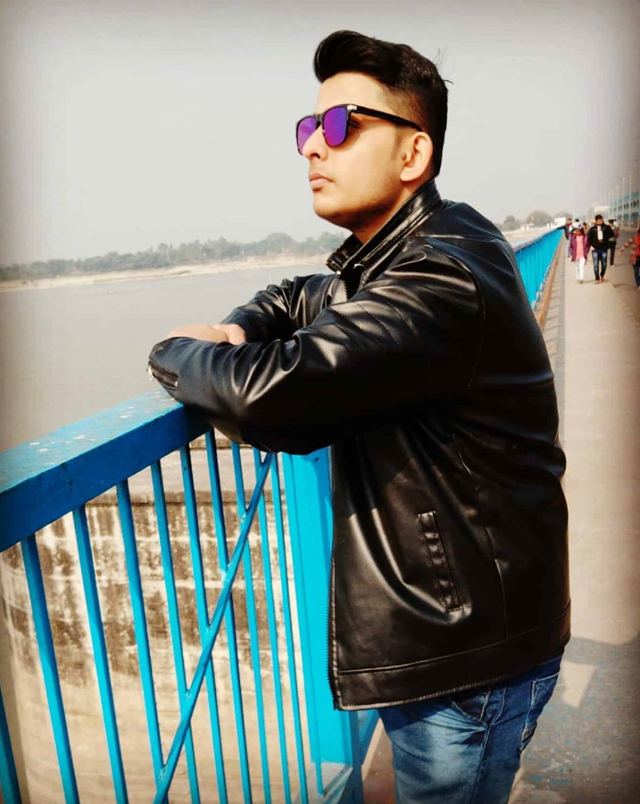

Kshitij Kumar Pandey

Summary
Hi! My name is Kshitij Kumar Pandey, currently I am pursueing Bachelor's
Of Engineering with Computer Science.
I have some experience as a web developer with MERN Stack, good problem
solving skills, strong grasp of various pattern recognition techniques,
and quite good knowledge of CS Fundamentals. With technology evolving so
rapidly, I try to learn something new everyday, adapt myself to the
changes. I believe that my strong will to learn exceeds my current skill
set, So I am looking for an opportunity to grow and challenge my personal
and profession skills.
Education
-
Bachelor Of Engineering
- Chandigarh University
- CGPA : 8.63
-
Intermediate
- Shree Sanatan Dharma Education Centrey
- Score : 70.4%
-
Matriculation
- Shree Sanatan Dharma Education Centrey
- Score : 90%
Projects
- Socail Media Application
- ToDO APP
- Android Calculator
Skills
- Problem Solving
- Analytical and Critical Thinking
- Leadership
- C/C++
- Data Structure & Algorithms
Achievement
- Globally Nominated For NASA SPACE APP CHALLENGE 2020.
- Technical Lead of CSI CUSB for the year 2022-2023.
-
Soft-Skills top performer for the year 2022 and selected as ELite
Emminent.
- Rank 33 on GFG among 13000+ students of my University.
- Won four continous Leetcode Daily badge.